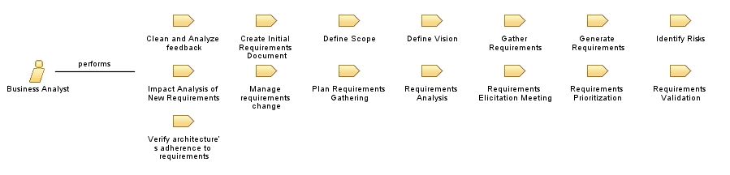

Role: Business Analyst
Work with the stakeholders to gather requirements that assist in the prioritization and formalization of them.
Relationships

Primary Performs
Clean and Analyze feedback
Create Initial Requirements Document
Define Scope
Define Vision
Gather Requirements
Generate Requirements
Identify Risks
Impact Analysis of New Requirements
Manage requirements change
Plan Requirements Gathering
Requirements Analysis
Requirements Elicitation Meeting
Requirements Prioritization
Requirements Validation
Verify architecture’s adherence to requirements
Modifies
Approval From Architect
Approval to Begin Development
Bug Report
Formal Requirements Document
Initial Requirements Document
Prioritized Requirements
Project Specification
Requirements Change Request
Requirements Gathering Plan
Requirements Transcript
Risk Chart
Vision Document